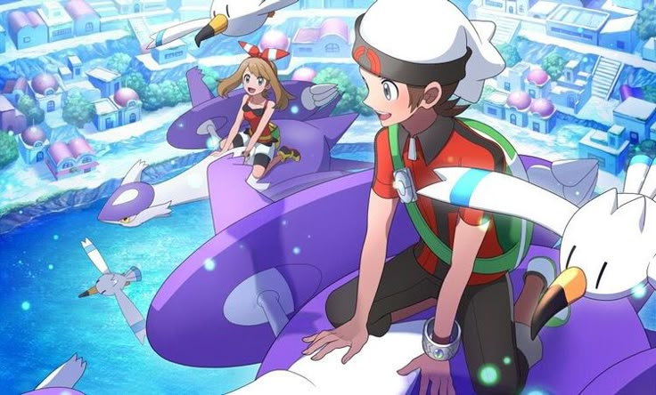

Los RPG, o Role-Playing Games, son videojuegos centrados en la interpretación y desarrollo de uno o varios personajes. Una de sus características principales es que el jugador puede mejorar progresivamente a su personaje mediante experiencia, habilidades, estadísticas, armas, armaduras u otro tipo de equipamiento. Dependiendo del juego, también puede ser posible tomar decisiones que afectan la historia o la manera en que se desarrolla la aventura.
| Nombre | Gameplay |
| Path of Exile | |
| Pokemon |  |